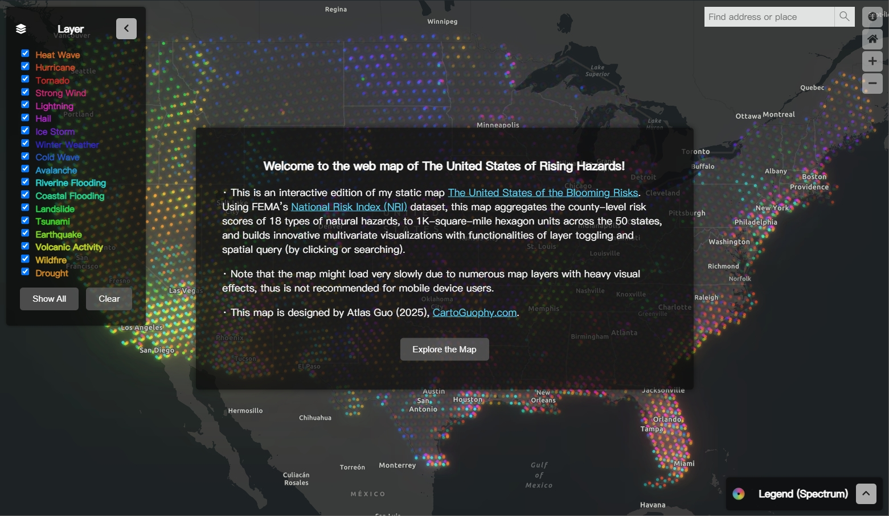
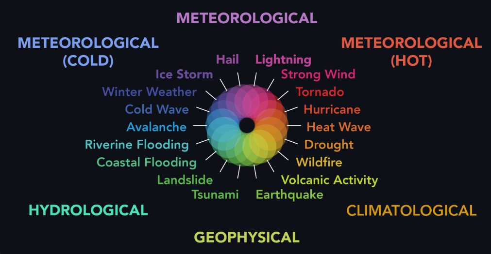
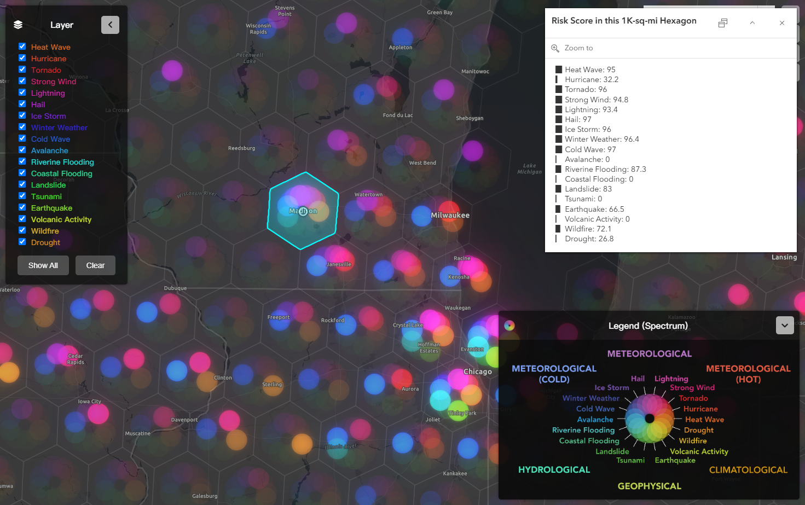
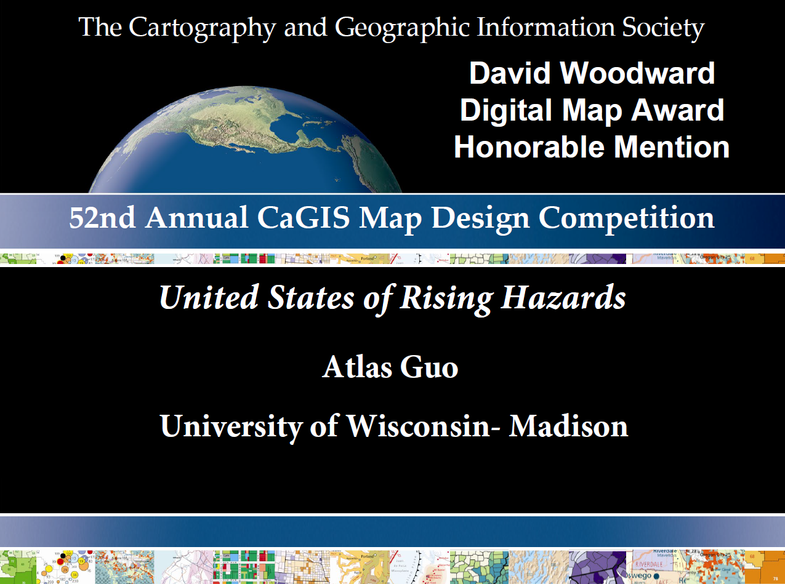
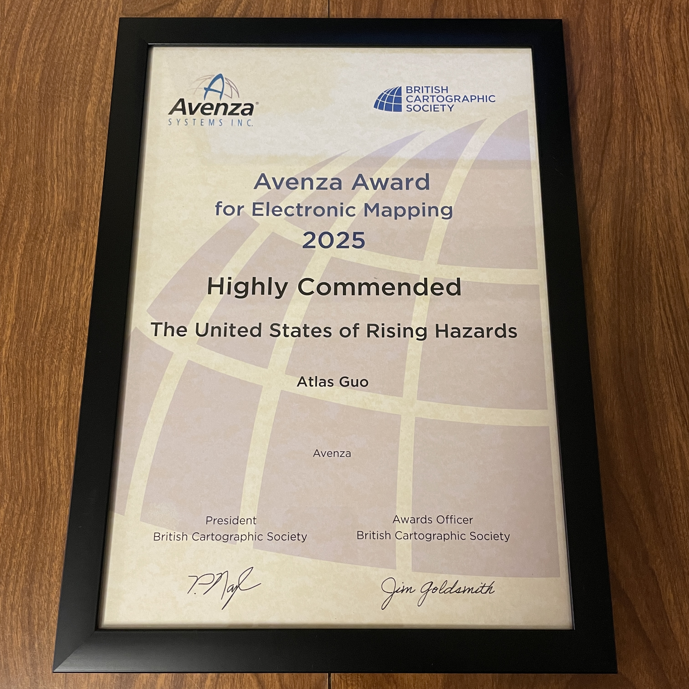

Using FEMA’s National Risk Index (NRI) dataset, this interactive map aggregates the county-level scores of 18 natural hazards, to 1K-SQ-MI hexagon units, and builds an innovative multivariate visualization with functionalities of layer toggling and spatial query by clicking or searching.
One of the key design objectives of this map is to explore how, when faced with a large number of attributes, a map can simultaneously present both the overall spatial pattern and the ability to retrieve individual attribute details. I have already begun exploring this concept and gained experience while designing these two static maps: United States of Natural Disasters , and United States of Blooming Risks .
The aggregation units for the main map and all inset maps are 1,000-sq-mi hexagons, generated under the Albers equal area conic projection. A specially designed illustrative scale graphic is included as a collapsible legend, on the bottom right corner of the web map interface.
The values for each hexagon are calculated as the weighted average of the original NRI risk scores at the county level, with weights determined by the proportion of the area each hexagon intersects with the counties. According to FEMA, the risk for a specific hazard is proportional to the Expected Annual Loss from that hazard, adjusted by a community risk factor. This factor increases with high Social Vulnerability and decreases with high Community Resilience. Notably, this visualization method (static map version) has been revised under the guidance of FEMA personnel.
FEMA does not provide hierarchical structures or categories of the 18 hazards – they are sorted alphabetically. In this symbol, all 18 hazard types are arranged along a color spectrum broadly based on their mechanisms. Similar hazards are placed closer together and assigned similar colors that correspond to their categories (e.g., hot/cold meteorological, climatological, hydrological, geophysical), visually revealing potential spatial patterns. Specifically, ChatGPT is used to generate detailed qualitative descriptions for each of the 18 hazards under a consistent standard. These descriptions were then used to create a similarity matrix (18x18), which informed the further sequence construction. The final arrangement of the color spectrum was fine-tuned manually based on my knowledge and expertise, ensuring accurate and logical progression.
The multivariate thematic symbol design uses color (transparency) to represent attributes: opaque/bright colors indicate higher risks for specific natural hazards. Particularly, the circular 18-color sequence is not a standard RGB color wheel. The segment between red and yellow is intentionally expanded to leverage the human eye’s heightened ability to distinguish orange-like hues. The Hex codes for these 18 colors were generated with the assistance of ChatGPT.
Additionally, functionalities of layer toggling, attribute information retrieving (pop-up) and place/address searching (search bar) are provided, allowing users to further explore their areas of interest with more details, i.e. scores of 18 individual hazards with color-coded risk levels.
To sum up, beyond successfully balancing the presentation of overall spatial patterns and individual attribute retrieval, this map intricately combines science (color theory) and art (innovative symbol design), theory (multivariate thematic mapping) and application (natural hazard risk assessment), as well as traditional cartography (thematic mapping) and automation (AI-assisted designing processes). It offers both professionals in related fields and the general public inspiring insights from diverse perspectives.
(Data Source: FEMA National Risk Index)
This map won the Honorable Mention of David Woodward Digital Map Award in 52th CaGIS Map Design Competition (2025).
This map was selected in the Interactive Web Map Award Finalist in Esri User Conference 2025 Map Gallery.
This map won the Highly Commended of Avenza Award for Electronic Mapping by British Cartographic Society (2025).